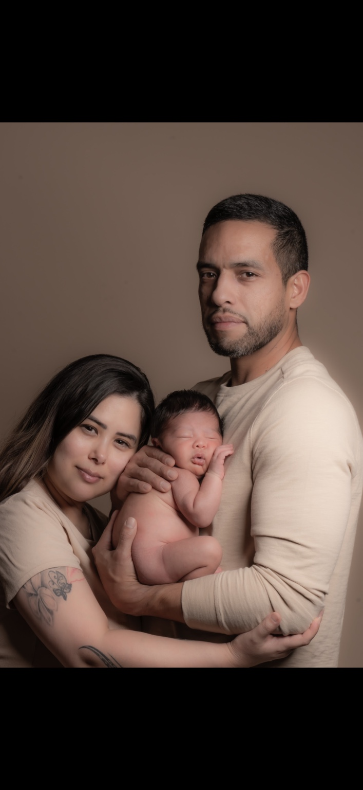

01 / V
Family · Entry
The Hearth
A composed family portrait, in the painter's tradition.
Ninety minutes in studio or on location. Direction of figurine, sculpted light, and a small archive of fifteen rendered portraits. The threshold to the studio's practice.
Read the commission